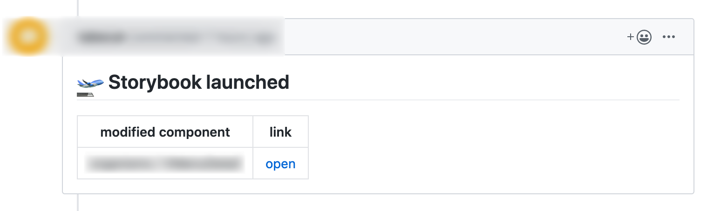

Introduction to CircleCI@Ginza.js#7
💪 ME 💪

Outline
- Argument: Using CircleCI in Frontend Development is very effortless and efficient
- CASE1: Automated storybook deployment to AWS S3
- CASE2: Support for checking the image of the changed component on Pull Request
- CASE3: Api spec document deployment and checking on the PR
- Conclusion: You should now enable CircleCI or other CI tools integration to your repository
Using CircleCI in Frontend Development is very effortless and efficient
What is CircleCI?
A kind of CI tools

What problems does CircleCI solve?
- Manual execution of unit / e2e test
- Manual execution of Linting
- Manual checking of components list
- Manual execution of deployment
and so on
CASE1: Automated storybook deployment to AWS S3
What is Storybook?
A kind of ui component list management tool
https://storybook.grommet.io/
Storybook deployment to AWS s3

CircleCI config
workflows:
version: 2
setup_and_ci:
jobs:
- storybook-prod:
requires:
- lint
- test
filters:
branches:
only:
- master
CircleCI config
steps:
- run:
name: Run storybook build
command: yarn build-storybook
- run:
name: Install aws cli
command: sudo apt-get install awscli
- run:
name: upload document
command: |
aws configure set preview.cloudfront true
aws s3 cp ${DIRNAME} s3://${S3_BUCKET}/${CIRCLE_PROJECT_REPONAME} --recursive
- run:
name: clear cache of CloudFront
command: |
aws cloudfront create-invalidation --distribution-id ${CLOUDFRONT_DISTRIBUTION_ID} --paths /${CIRCLE_PROJECT_REPONAME}/*
CASE2: support for checking the image of the changed component on Pull Request
Storybook deployment to artifacts

Pull Request comment
Flow image
- Output the greped difference
- Generate urls and comment based on difference
- Post the comment to the pull request
1. Output the greped difference
PULL_REQUEST_ID=$(echo $CIRCLE_PULL_REQUEST | awk -F'/' '{print $NF}')
TARGET_BRANCH=$(curl \
"https://api.github.com/repos/$CIRCLE_PROJECT_USERNAME/$CIRCLE_PROJECT_REPONAME/pulls/$PULL_REQUEST_ID?access_token=$GITHUB_API_TOKEN" \
| jq -r '.base.ref')
git diff origin/${TARGET_BRANCH}...HEAD --name-only | grep 'components.*\(vue\|stories\.ts\)'
2. Generate urls and comment based on difference
Generate hirerarchy
export const generateHierarchyFromFilepath = (filePath: string): string => {
const re = filePath.match(
/.*?components\/(.*?)\/(index\.vue|index\.stories\.ts)?$/
)
if (!re) {
throw new Error('Passed path is invalid')
}
return re[1]
}
also we can use this function on the stories
import base from 'paths.macro'
import { generateHierarchyFromFilepath } from '~/utils'
storiesOf(generateHierarchyFromFilepath(base), module)
.add('foo', () => ({}))
3. Post the comment to the pull request
const endpoint =
`https://api.github.com/repos/${CIRCLE_PROJECT_USERNAME}/${CIRCLE_PROJECT_REPONAME}/issues/${PULL_REQUEST_ID}/comments`
await axios.post(
endpoint,
{
body: comment
},
{
headers: {
Authorization: `Bearer ${GITHUB_API_TOKEN}`,
Accept: 'application/vnd.github.v3.html+json'
}
}
)
Whole Code Image
import { generateHierarchyFromFilepath } from '../utils'
const getModifiedFilesFromStdin = (): Promise<string[]>
const generateStorybookUrlFromHierarchy = (hierarchy: string): string
const generateComment = (
modifiedStories: { hierarchy: string; url: string }[]
): string
const postCommentToPr = async (comment: string): Promise<void>
;(async (): Promise<void> => {
const modifiedFiles: string[] = await getModifiedFilesFromStdin()
if (modifiedFiles.length === 0) {
process.exit()
}
const modifiedStories = modifiedFiles
.map(generateHierarchyFromFilepath)
.filter((item, index, array) => array.indexOf(item) === index)
.map((hierarchy) => ({
hierarchy,
url: generateStorybookUrlFromHierarchy(hierarchy)
}))
const comment = generateComment(modifiedStories)
postCommentToPr(comment)
})()
Reference
CASE3: Api spec document deployment and checking on the PR
What is OpenAPI?
OpenAPI Specification (formerly Swagger Specification) is an API description format for REST APIs.
What problems does OpenAPI solve?
- Writing document manually
- It's hard to write a table by hand
- It's hard to write sample json by hand
- Inconsistent document format
- Duplicate description
The same idea as storybook deployment
- Merge to master branch triggers story book deployment job to AWS S3
- Push on branch associated with pull request triggers deployment job to artifacts
How to visualize document?
Using Swagger UI
Preparing Swagger UI distribution files
version: 2.1
executors:
swagger_ui:
docker:
- image: swaggerapi/swagger-ui
jobs:
prepare_docs:
steps:
- run:
name: prepare openapi docs
command: |
sed -i "s|https://petstore.swagger.io/v2/swagger.json|openapi.yml|g" /usr/share/nginx/html/index.html
mv /usr/share/nginx/html docs
cp openapi.yml docs
⚠ Point to be noted ⚠
If the "Only build pull requests" setting is not enabled,
when the pull request creation timing is late,
the process of commenting on the pull request fails.
If you really want to turn that setting off
You can refer to this article
Conclusion
You should now enable CircleCI or other CI tools integration to your repository


We are hiring!